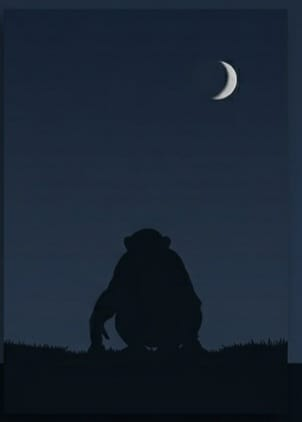
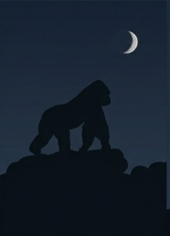
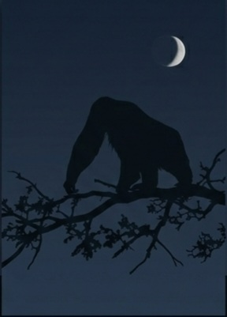

PÁGINA 4 • CONTEÚDO
Os Chimpanzés
Função na sociedade
No romance O Planeta dos Macacos, os chimpanzés estão principalmente ligados à ciência, à pesquisa, à curiosidade intelectual e à investigação.
Eles representam a parte da sociedade dos macacos dedicada à busca pelo conhecimento e à compreensão do mundo.
Características
- Ciência: participação em pesquisas e estudos.
- Investigação: busca por respostas e novas descobertas.
- Curiosidade: interesse em compreender fenômenos desconhecidos.
- Inovação: desenvolvimento e questionamento de ideias.
Representação
| Espécie | Função social | Características |
|---|---|---|
| Chimpanzés | Ciência | Pesquisa, investigação e inovação |

Os Gorilas
Função na sociedade
Os gorilas são associados à força física, à ação prática, à caça e à segurança. Dentro da organização social apresentada no romance, representam uma parcela mais ligada à força e ao poder de ação.
Sua função está relacionada principalmente às atividades que exigem autoridade física, imposição e capacidade de agir diretamente sobre situações concretas.
Características
- Força física: representam a força dentro da sociedade.
- Ação: estão ligados às atividades práticas.
- Caça: participam de atividades relacionadas à caça.
- Segurança: exercem funções ligadas à proteção e à autoridade.
Representação
| Espécie | Função social | Características |
|---|---|---|
| Chimpanzés | Ciência | Pesquisa, investigação e inovação |
| Gorilas | Força e ação | Caça, segurança e atividades práticas |

Os Orangotangos
Função na sociedade
Os orangotangos ocupam posições de autoridade e influência política e institucional dentro da sociedade apresentada no romance.
Eles são apresentados como mais conservadores e ligados à manutenção das ideias tradicionais da sociedade. Por isso, entram em conflito com descobertas científicas que ameaçam suas certezas.
Características
- Autoridade: ocupam posições de influência.
- Política: participam da organização política da sociedade.
- Tradição: estão ligados à manutenção das ideias tradicionais.
- Instituições: representam estruturas de poder e organização social.
Representação
| Espécie | Função social | Características |
|---|---|---|
| Chimpanzés | Ciência | Pesquisa, investigação e inovação |
| Gorilas | Força e ação | Caça, segurança e atividades práticas |
| Orangotangos | Autoridade | Política, tradição e instituições |
